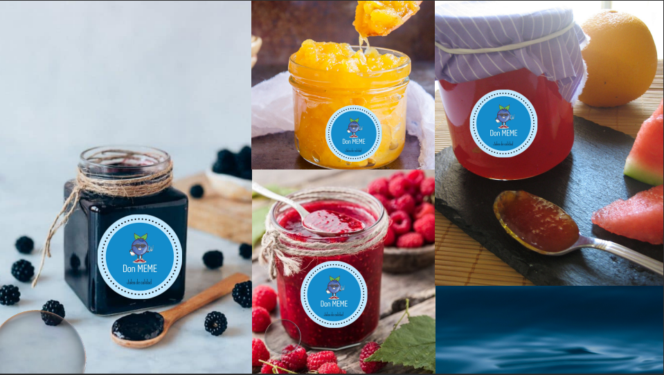

Proyecto Empresarial
En el colegio nos dejaron de proyecto crear una empresa de jalea, que llevara estrategias y mucho metodo de marketing.
Con mi equipo decidimos crear un logo llamativo, con públicidad llamativa y que se viera apetitiva, sobre todo era hacerla
diferente a las demas empresas que se iban a crear en el curso, entonces decidimos crear lo siguiente:
|  |
Proyecto Biblioteca
Como proyecto final del curso de mercadotecnia, nos toco administras
y desarrollar públicidad para la biblioteca del colegio, con la participación de todo el grado, yo y
una compañera quedamos a cargo de ellos, yo era el gerente general y ella se encargaba del sector de
mercadotecnia y del sector de limpieza, yo me quede acargo de la gestión y orden de todo, analizando
todo lo que era el sector de los libros y el orden en el que se iba a trabajar.

Laborar de Supervisor
En la empresa familiar de agua potable Amapala, fui supervisor de ventas y
de rutas, iba a ver como era el tratado que le brindaban nuestros vendedores a los clientes,
veia como era que se desenvolbian hablando y negociando con los cliesntesMayoritarios y
minoritarios, en la foto que aparecera es un recuerdo del primer estante que brindamos nostros
a nuestros clientes mas frecuentes y mas leales.
Proyecto de Crear una empresa
Como examen en la materia de mercadotecnia nos dejaron realizar una empresa
de alguna bebida, este proyecto fue en pareja, lo cual mi compañero de trabajo fue Carlos,
con el que creamos la marca de refrescos CR7, el nombre surge de las iniciales de nuestros
nombres, Carlos, Rony y el numero 7 fue por la fecha de nuestros cumpleaños.